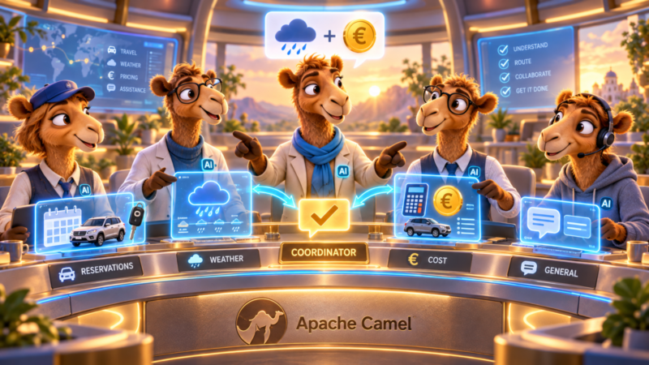
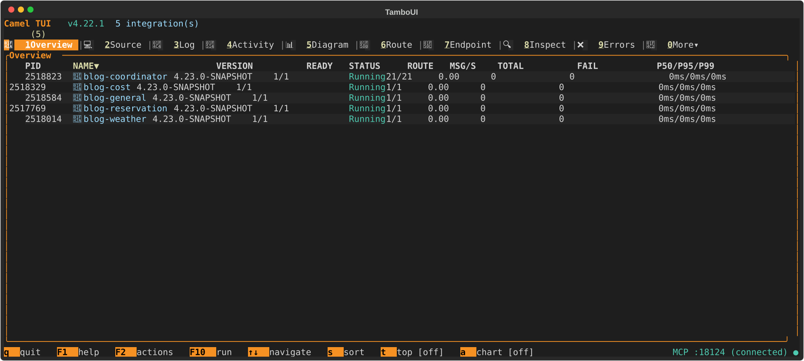
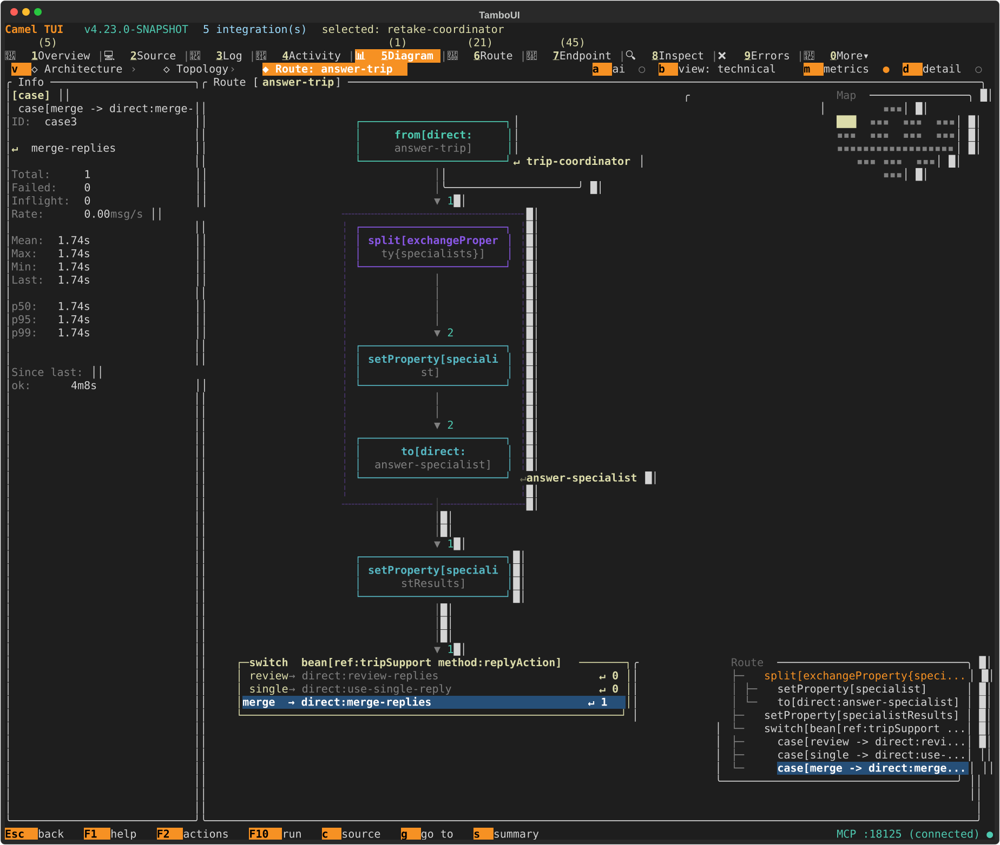
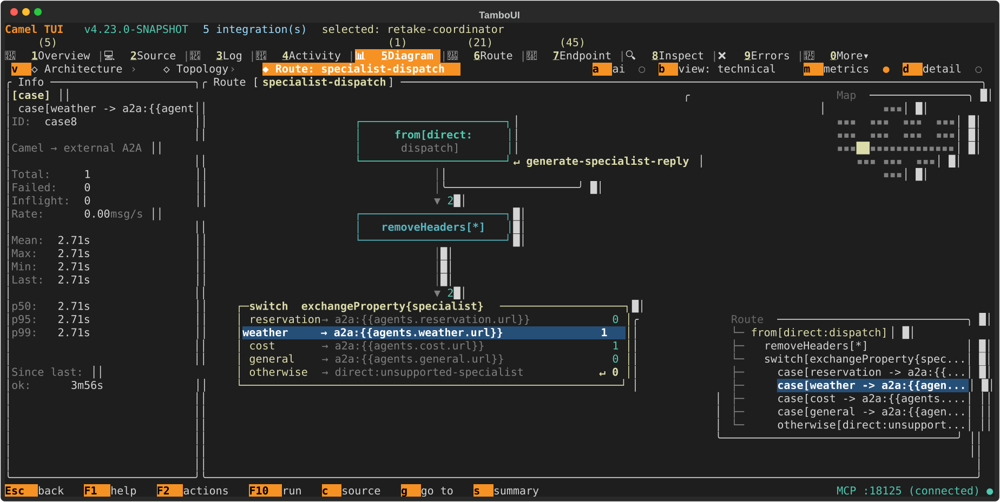
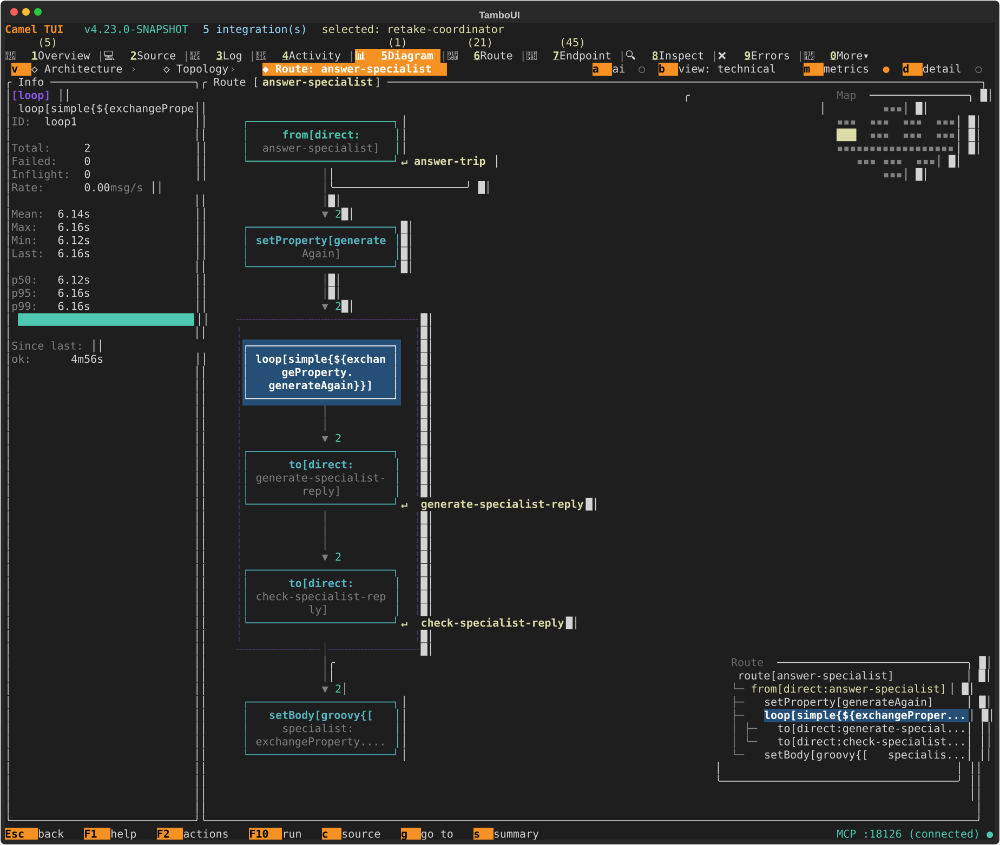

“Will it rain in Lisbon on Tuesday, and how much is an SUV for five days?”
It is one customer message, but it needs two answers. A weather specialist can handle the first part. A pricing specialist can handle the second. Something still has to select both, call them, check their contributions, and return one useful reply.
That sounds like an integration problem to me.
Think of this as part two of my earlier post on semantic decisions in Camel. That post introduced camel-semantic with Jev for routing and validation. Here, I use those decisions to coordinate a team of specialist agents: choosing who should answer, calling them in parallel, and checking their replies.
This post is inspired by Kevin Dubois’s two articles on Quarkus, LangChain4j, and Jev: routing agents with Jev and Laya and multi-intent requests and fan-out.
Kevin’s car rental scenario brings together specialist selection, reply checks, and requests that need more than one agent. I wanted to bring those ideas into one example built with Camel throughout.
With Camel, the same coordination ideas become small, readable routes. A Split expresses parallel work. A Switch maps a decision to a destination. A Loop expresses another attempt. For me, that is the elegance of this approach: the route reads like the workflow it implements.
The coordinator is a Camel application, every specialist is a Camel application, and their conversations use Camel’s A2A component. Selecting destinations, collecting replies, and deciding whether to retry are all visible in the routes.
The result is the semantic-agent-routing example. It combines the Semantic language, A2A component, and familiar Enterprise Integration Patterns. A decision model evaluates the questions; Camel owns the destinations, parallel work, retries, and response handling.
Version: This example uses Camel 4.23.0-SNAPSHOT, including batched semantic evaluation and the new Switch EIP. The Semantic language has Preview support status.
Five Camel applications, two kinds of model calls
There is one coordinator and four specialists: reservation, weather, cost, and general help. Each specialist is a separate Camel application exposing an A2A endpoint.
The coordinator receives plain text at POST /trip. From there, the flow is:
| Step | What Camel does |
|---|---|
| Select | Ask which specialties the request needs, using camel-semantic. |
| Call | Split the selected names and call the specialists in parallel through camel-a2a. |
| Check | Evaluate each reply against that specialist’s part of the request. |
| Combine | Return one accepted reply directly, or merge several with camel-openai. |
| Check again | Evaluate the merged answer against the whole request. |
The model calls serve different purposes:
- The System One model makes decisions: it returns typed answers and probabilities.
- The Large Language Model (LLM) writes replies: it generates each specialist’s contribution and the combined answer.
The routes keep both services configurable.
The specialists use deliberately small, fixed demo facts. Lisbon has a Tuesday forecast of light rain and 18°C; an SUV costs €75 per day. They do not look up live weather or make bookings. That keeps the example focused on how Camel coordinates the work.


Five applications, all Camel. The coordinator and four specialists running with Camel JBang. Click any screenshot to enlarge it.
Ask which specialists are needed
A single category cannot describe every request. Asking “which specialist?” forces the weather-and-price question into one bucket, even when the model is confident about its choice.
The coordinator therefore asks three independent Boolean questions: does this request need reservation, weather, or cost information? Here is the weather definition from the YAML:
needsWeather:
type: boolean
instructions: Does answering this customer request fully require input about weather, rain, forecasts or driving conditions at the destination?
threshold: "{{routing.fan-out-threshold}}"The default threshold is 0.5. Each specialist whose probability meets that threshold is selected. These are independent questions, so weather and cost can both match.
A fourth question, named specialist, asks for one of reservation, weather, cost, or general. It is a fallback when none of the independent questions matches. The fallback also has a minimum selected-option probability, 0.55; below it, the coordinator asks the customer to clarify.
One batch, four answers
All four questions are evaluated together in select-specialists:
- setProperty:
name: routingDecisions
language:
language: semantic
expression: refs:specialist,needsReservation,needsWeather,needsCostrefs: returns a map of named answers. With the TypeSafe AI adapter, this batch goes to the decision service in one HTTP request. The result metadata, including the Choice probabilities, is available in CamelSemanticResults.
A small plain Java bean, TripSupport, turns those answers into a list such as [weather, cost]. It has no Camel dependencies: it accepts maps and numbers and returns names or action labels. I kept this policy in Java because a few ordinary if statements are easier to read than a long expression embedded in YAML.
Choice confidence does not control this selection. A confident single-label answer still does not tell us whether the request contains a second topic.
Split the work, then dispatch with Switch
Call the selected specialists in parallel
Once the coordinator has the specialist list, the parallel work is a Split EIP:
In answer-trip:
- split:
expression:
exchangeProperty: specialists
parallelProcessing: true
stopOnException: true
aggregationStrategy: "#class:org.apache.camel.processor.aggregate.GroupedBodyAggregationStrategy"
steps:
- setProperty:
name: specialist
simple: "${body}"
- to: direct:answer-specialistEach branch generates and checks one specialist’s reply. Camel’s grouped-body aggregation collects the results when the branches finish. The merge waits for those results; it does not run alongside the specialists.


answer-trip in Camel TUI. The Split sends two exchanges to the specialist routes. After their replies are collected, the Switch selects merge once. Its details are shown on the left.
Give each name a fixed destination
Inside each branch, the Switch EIP maps the selected name to a configured A2A endpoint:
In specialist-dispatch:
- switch:
selector:
exchangeProperty:
expression: specialist
case:
- value: reservation
uri: "a2a:{{agents.reservation.url}}?protocolBinding=JSONRPC&connectTimeout=5000"
- value: weather
uri: "a2a:{{agents.weather.url}}?protocolBinding=JSONRPC&connectTimeout=5000"
- value: cost
uri: "a2a:{{agents.cost.url}}?protocolBinding=JSONRPC&connectTimeout=5000"
- value: general
uri: "a2a:{{agents.general.url}}?protocolBinding=JSONRPC&connectTimeout=5000"
otherwise:
uri: direct:unsupported-specialistThis is a good fit for Switch: one value selects one destination from a fixed table. The model supplies a label; the route author supplies the endpoints.


specialist-dispatch in Camel TUI. The Switch mirrors the destination table in the YAML. Weather and cost each receive one message; selecting the weather case reveals its counters and timing.
A specialist is a small Camel route
The other side of the A2A call is also Camel. Here is the weather specialist, with its prompt shortened for the article:
- route:
id: weather-agent
from:
uri: a2a:weather
parameters:
name: weather
description: Camel car rental weather specialist using demonstration data
protocolBinding: JSONRPC
httpServerComponent: platform-http
validateAuth: false
steps:
- to:
uri: openai:chat-completion
parameters:
temperature: "{{openai.temperature}}"
requestTimeout: "{{openai.request-timeout}}"
systemMessage: >-
You are the weather specialist for a car rental demonstration.
Answer only the weather part of the request and label facts as demo data.
Demo forecast (not live): Lisbon, Tuesday, light rain, 18 C.
No forecast is available for other places or dates. The A2A consumer exposes the agent and its card; the producer handles discovery and the protocol calls. The route can concentrate on preparing an answer. All servers bind to loopback, and authentication is disabled for this local demo.
The OpenAI component reads the shared API key, base URL, and model from application.properties. Each specialist only supplies its own prompt and generation options. Gemini works through its OpenAI-compatible endpoint, so changing the generation provider does not require rewriting these routes.
Check each contribution, then the whole answer
Generate and check in a Loop
Camel runs generation and checking in a Loop EIP. The two named routes make the sequence easy to follow:
In answer-specialist:
- setProperty:
name: generateAgain
constant:
expression: "true"
resultType: boolean
- loop:
doWhile: true
simple: "${exchangeProperty.generateAgain}"
steps:
- to: direct:generate-specialist-reply
- to: direct:check-specialist-replyThe checking route updates generateAgain: only a clear rejection with attempts remaining asks the Loop to run again.


answer-specialist in Camel TUI. The Loop contains the same two calls as the YAML above. Both specialists passed on their first attempt in this capture, so the selected Loop reports two completed exchanges in total.
Accept, retry, or ask for review
A weather reply should answer the weather question. It should not fail merely because it leaves pricing to the cost specialist.
The coordinator passes the original request, specialist name, and draft reply to a semantic question called relevant:
relevant:
type: boolean
instructions: >-
Does the drafted reply address every requested part within the named specialist's
role? A helpful greeting or a request for missing details can address the customer.
The specialist need not answer other specialists' topics, but must not omit items
belonging to its own specialty.
state: "${exchangeProperty.validationState}"
threshold: 0.5
uncertainty: 0.1
uncertaintyPolicy: non-matchThe threshold and uncertainty define an explicit policy:
| Probability | Action |
|---|---|
Above 0.6 | Accept the draft. |
From 0.4 through 0.6 | Return a review response. |
Below 0.4 | Retry if the attempt budget allows; otherwise return a review response. |
These are demo settings, not universal quality boundaries. The default budget is three generation attempts, including the first. A retry includes the previous draft and correction feedback.
TripSupport.draftAction(...) returns accept, retry, or review, and another Switch sends that action to a short, named route. Uncertain or exhausted drafts are withheld from the public response.
Combine the accepted contributions
When all specialist branches finish, deciding what to do with their replies is similarly compact:
Back in answer-trip:
- switch:
selector:
method:
ref: tripSupport
method: replyAction
case:
- value: review
uri: direct:review-replies
- value: single
uri: direct:use-single-reply
- value: merge
uri: direct:merge-repliesThis is the Switch at the bottom of the answer-trip screenshot:
review— withhold the answer if any contribution was not accepted.single— return the one accepted contribution directly.merge— ask the chat model to combine several accepted contributions with the original request.
That combined answer gets a different question: does it address every part of the original request? If it clearly fails, Camel retries the merge within its own budget, using the replies already collected. It does not call all the specialists again.
Service failures follow the HTTP error path and return 502; they do not consume semantic regeneration attempts. Invalid input returns 400. Scoped onException handling keeps that HTTP response logic out of the main workflow.
Change the decision service through configuration
The coordinator uses camel-semantic with the TypeSafe AI adapter. Hosted Jev implements that contract. The example also includes configurations for separate Laya and Julia-1 container projects, with compatible HTTP responses.
The containers live outside the Camel example and can be reused independently. The routes read the same settings for every compatible service:
camel.component.typesafe-ai.base-url={{env:DECISION_BASE_URL:http://127.0.0.1:8100}}
camel.component.typesafe-ai.api-path={{env:DECISION_API_PATH:/v1/systemone}}
camel.component.typesafe-ai.api-key={{env:DECISION_API_KEY:local-demo}}
camel.component.typesafe-ai.model={{env:DECISION_MODEL:jev-latest}}The configurable API path lets a local service expose /v1/decision, as in Kevin’s original example, while hosted Jev uses /v1/systemone.
Compatibility here means the request and response contract, including named batch answers and probability metadata. It does not mean the models make the same decisions. A service with a different protocol needs a semantic adapter.
Run it and follow it in Camel TUI
The example needs Java 21+ and Camel JBang. The README has the complete provider recipes.
1. Configure the two services
From the example directory, copy camel-agent-routing.env.example to camel-agent-routing.env and fill in your keys and provider settings. Git ignores this local file. For the hosted setup used here, use:
OPENAI_API_KEY='your-api-key'
OPENAI_BASE_URL=https://generativelanguage.googleapis.com/v1beta/openai/
OPENAI_MODEL=gemini-3.1-flash-lite
JEV_API_KEY='your-jev-key'
DECISION_BASE_URL=https://api.typesafe.ai
DECISION_API_PATH=/v1/systemone
DECISION_MODEL=jev-latest
DECISION_TIMEOUT=5000
DECISION_API_KEY=${JEV_API_KEY}OPENAI_API_KEY is the variable the example reads for generation; in this configuration it holds the API key. The decision service has its own key.
2. Start the agents and send a request
From the example directory, run ./start.sh on Linux or macOS, or .\start.ps1 in Windows PowerShell. The launcher loads ./camel-agent-routing.env from the current directory, starts the four specialists, waits for their agent cards, and starts the coordinator. Leave ports 8080–8084 available. A local decision container, when chosen, must be started separately.
Send the two-topic request:
curl -sS http://127.0.0.1:8080/trip \
-H 'Content-Type: text/plain' \
--data 'Will it rain in Lisbon on Tuesday, and how much is an SUV for five days?'The JSON response reports the selected specialists, each specialist’s status and attempt count in results, the number of mergeAttempts, and the final reply.
In this run: Camel selected
weatherandcost. Both contributions and the merged answer passed on their first attempt. The reply included the demo forecast and the five-day SUV price of €375.
Check the selected list as well as the final status when trying your own requests.
3. Inspect the routes in Camel TUI
In another terminal, run camel tui. Select the coordinator and open the Diagram view. Follow answer-trip, specialist-dispatch, and answer-specialist to see the routes pictured beside the YAML above. Select a Switch case or the Loop to inspect its message count and timing.
The screenshots were captured from live runs of the same routes, on separate local ports.
Test the routes and evaluate the decisions
mvn verify exercises the orchestration using local HTTP fixtures, without API keys or model downloads. It covers parallel calls, specialist selection, retry budgets, uncertain replies, merge handling, and HTTP failures.
Those tests establish what Camel does with supplied decisions. The opt-in routing evaluation in the README asks a real decision service to select specialists for labelled requests. That is a separate question, and one worth checking for every provider and prompt change.
An accepted reply is not proof of complete routing. The single-specialist path skips merging and the whole-request completeness check. If routing misses a second topic, the chosen specialist can still pass its own relevance check. An accepted response therefore does not prove that every intent was found, or that the facts are correct.
What I like about this example is that those policies have clear places in the routes. Selecting another specialist changes a list. Parallel calls are a Split. Known destinations are a Switch. Another generation attempt is a bounded Loop. I can inspect each step in Camel TUI and change the policy without changing the specialists’ protocol.
The complete example and README are available in Apache Camel’s examples repository. For the semantic definitions themselves, see the earlier introduction to semantic decisions in Camel.